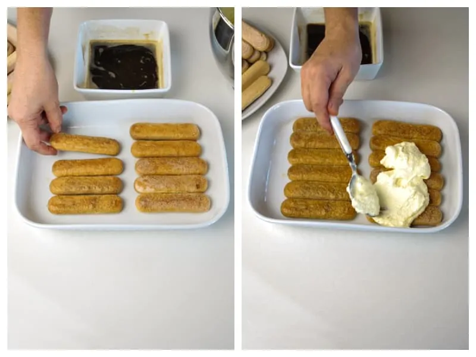

Tiramisu
The Main Ingredients

| 300gm |
Savoiardi Ladyfingers |
| 500gm |
mascarpone cheese |
| 4 medium |
eggs |
| 100gm |
granulated sugar |
| 300ml |
coffee |
| 2 tbsp |
rum |
| 2tsp |
unsweetened cocoa powder |
-
First of all, make the coffee. For a quick and delicious Italian coffee we used an Espresso Machine. Then add 2 tablespoons of Rum or Marsala wine. This is optional. If you don’t like liqueurs or you are making Tiramisu for children, don’t use it. Your tiramisu is great all the same, even without liqueur. Set aside and let it cool.
-
Separate egg whites from yolks. Take a bowl and whip the egg whites until stiff: you will get at it when the the egg whites will not move if you turn the bowl over. Just remember that, in order to whip the egg whites pretty stiff, there should not be any trace of yolk in them. When ready, set aside.
-
Now in bowl whisk the egg yolks with the sugar until pale and smooth, 3 to 5 minutes.
-
In the meantime, pour the mascarpone cheese into a bowl and work it with a spoon to make it softer. Mascarpone cheese must be of excellent quality, creamy and thick. When the egg yolks are ready add the mascarpone cheese.
-
Using the flex edge beater, whisk the mascarpone cream slowly for 2 or 3 minutes. Now add stiffen egg whites.
-
Mix with a wooden spoon, from bottom to top. Mix slowly until it’s smooth and creamy.
-
Now we are going to make the layers of ladyfingers and mascarpone cream. You can make 2 or more layers, depending on the width and depth of your pan. So dip quickly (1 or 2 seconds) Savoiardi Ladyfingers into the coffee. IMPORTANT! Savoiardi should not engage too much coffee, otherwise your Tiramisu will turn out too soggy. Then place them in a ceramic or glass cooking pan.
-
Arrange them to cover the bottom of the pan. Spread the mascarpone cream on top of the Savoiardi.
-
Add another layer of Savoiardi and then cover with more mascarpone cream. If you are making the last layer, spread plenty of mascarpone cream. Tiramisu is ready!
-
Finally sprinkle with cocoa powder. Let rest 3 hours in the refrigerator before serving (even better if you make the tiramisu the day before, letting it to rest all night long in the fridge). You can add chocolate flakes on top according to taste.